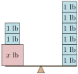
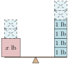
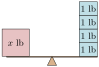
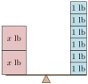
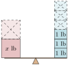
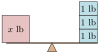
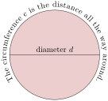

Section 1.5 Solving One-Step Equations
In Section 4 we learned how to check whether or not a give number is a solution to an equation. But the number to check was always given to us. In this section, we begin learning how to find solution(s) ourselves.
Subsection 1.5.1 Imagine Filling in the Blanks
Let’s start with a simple situation—so simple that you might not need algebra, but the example serves as a warm-up.
Example 1.5.2.
A number plus \(2\) is \(6\text{.}\) What is that number?
You may be so familiar with arithmetic that you know the answer already. The algebra approach is to translate “A number plus \(2\) is \(6\)” into an equation:
\begin{equation*}
x+2=6
\end{equation*}
where \(x\) is the number we are trying to find. How do we find the value for \(x\) that makes the equation true?
One valid option is to imagine what number you could put in place of \(x\) that would result in a true equation.
-
Would \(0\) work? No, that would mean \(0+2=6\text{,}\) which is false.
-
Would \(17\) work? No, that would mean \(17+2=6\text{,}\) which is false.
-
Would \(4\) work? Yes, because \(4+2=6\) is a true equation.
So one solution to the equation is \(4\text{.}\) No other numbers can be a solution, because when you add \(2\) to something smaller than \(4\text{,}\) the result is smaller than \(6\text{.}\) And when you add \(2\) to something larger than \(4\text{,}\) the result is larger than \(6\text{.}\)
This approach (“imagining” what number works in the equation) might work for you to solve very basic equations. It’s not going to work in general with more complicated equations. And so we move on to a more systematic approach that you can use all the time.
Subsection 1.5.2 The Basic Principle of Algebra
Let’s revisit Example 2, but think it through differently.
Example 1.5.3.
If a number plus \(2\) is \(6\text{,}\) what is the number?
If a number plus \(2\) equals \(6\text{,}\) then the number is a little smaller than \(6\text{.}\) We should be able to subtract \(2\) from \(6\) to get that unknown number. (We are using the opposite operation from addition, which is subtraction.)
Doing that subtraction: \(6-2=4\text{.}\)
Let’s try this strategy with another example.
Example 1.5.5.
If a number minus \(2\) equals \(6\text{,}\) what is that number? The mystery number must be a little larger than \(6\text{.}\) The opposite of subtraction is addition, so if we add \(2\) to \(6\) we will find the unknown number. So the unknown number is \(6+2=8\text{.}\)
Does this strategy work with multiplication and division?
Example 1.5.6.
If a number multiplied by \(2\) makes \(6\text{,}\) what is that number? The mystery number is small, since it gets multiplied by \(2\) to make \(6\text{.}\) If we divide \(6\) by \(2\text{,}\) we will find the unknown number. Note that division is the opposite action of multiplication.
So the unknown number is \(\frac{6}{2}=3\text{.}\)
Example 1.5.8.
If a number divided by \(2\) equals \(6\text{,}\) what is the number? We must be starting with a larger number, since cutting it in half makes \(6\text{.}\) If we multiply \(6\) by \(2\) (because multiplying is the opposite of dividing) then we find the unknown number is \(6\cdot2=12\text{.}\)
These examples explore an important principle for solving an equation—applying an opposite arithmetic operation. We can revisit Example 2 and apply this strategy with more care and intentionality. If a number plus \(2\) is \(6\text{,}\) what is the number? We will use \(x\) to represent the unknown number. The question translates into the math equation
\begin{equation*}
x+2=6\text{.}
\end{equation*}
Picture the equal sign as the middle of a balanced scale. The left side has a brick labeled “\(x\) lb” together with \(2\) one-pound bricks. So the total weight on the left is \(x+2\text{.}\) The right side has \(6\) one-pound bricks. Figure 9 (left side) shows the scale.
Aside: Abbreviation for “pound”.



To find the weight of the unknown brick, we can take away \(2\) one-pound bricks from each side of the scale and that will keep the scale balanced. Figure 9 (right side) shows the solution.
An equation is like a balanced scale: the two sides of the equation are equal, and the two sides of the balanced scale have equal weight. Just like we can take away \(2\) lb from each side of a balanced scale, we can subtract \(2\) from each side of an equation. Instead of drawing two pictures of balance scales, we can use algebra symbols and solve the equation \(x+2=6\) in the following way:
\begin{align*}
x+2\amp=6\amp\amp\text{like a balanced scale}\\
x+2\subtractright{2}\amp=6\subtractright{2}\amp\amp\text{remove the same quantity from each side}\\
x\amp=4\amp\amp\text{still balanced; now it straight up tells you the solution}
\end{align*}
Each line of the algebra above shows what is called an equivalent equation. Each of those equations is “algebraically equivalent” to the one that came before it, meaning it has exactly the same solution(s). The final equivalent equation \(x=4\) tells us directly that the solution to the equation is \(4\text{.}\)
In theory, there could have been more than one solution to the equation (although that is not the case with this equation). So conceptually, there is a collection of solutions to any given equation. We call this collection a solution set. Any set of numbers that only has one or a few numbers in it is written using curly braces. In this case, the solution set is \(\{4\}\text{.}\) Using braces to surround a collection of numbers listed out is called set notation, not to be confused with set-builder notation from Section 3.
We have learned we can add or subtract the same number on each side of the equal sign, just like we can add or remove the same amount of weight on a balanced scale. Can we multiply and divide the same number on each side of the equal sign? Let’s look at Example 6 again: If a number times \(2\) is \(6\text{,}\) what is the number? Another balance scale can help visualize this.



At first, the scale is balanced. If we cut the weight in half on both sides, it should still be balanced. We can see from the scale that \(x=3\) is correct.
Removing half of the weight from each side of the scale is like dividing both sides of an equation by \(2\text{:}\)
\begin{align*}
2x\amp=6\\
\divideunder{2x}{2}\amp=\divideunder{6}{2}\\
x\amp=3
\end{align*}
The equivalent equation in this example is \(x=3\text{,}\) which tells us that the solution to the equation is \(3\) and the solution set is \(\{3\}\text{.}\)
Remark 1.5.11.
Note that when we divide each side of an equation by a number, we use a fraction bar, not a division symbol. The equation \(\divideunder{2x}{2}=\divideunder{6}{2}\) could be written as \(2x\divideright{2}=6\divideright{2}\text{,}\) but algebra tends to avoid using the \(\div\) symbol. In part, this is because when writing by hand, it might be confused with a subtraction sign.
Similarly, we can multiply each side of an equation by \(2\) if that is helpful, and it will keep a scale in balance. We can summarize these properties.
Fact 1.5.12. Properties of Equivalent Equations.
If there is an equation \(\text{Left}=\text{Right}\text{,}\) we can do the following to obtain an equivalent equation.
\begin{equation*}
\text{Left}\addright{c}=\text{Right}\addright{c}
\end{equation*}
(add the same number to each side)
\begin{equation*}
\text{Left}\subtractright{c}=\text{Right}\subtractright{c}
\end{equation*}
(subtract the same number from each side)
\begin{equation*}
\text{(Left)}\multiplyright{c}=\text{(Right)}\multiplyright{c}
\end{equation*}
(multiply each side of the equation by the same nonzero number)
\begin{equation*}
\displaystyle\divideunder{\text{Left}}{c}=\divideunder{\text{Right}}{c}
\end{equation*}
(divide each side of the equation by the same nonzero number)
Subsection 1.5.3 Solving One-Step Equations and Stating Solution Sets
Notice when we solved equations in Subsection 2, the final equation looked like \(x=\text{number}\text{,}\) where the variable \(x\) stands alone on one side of the equal sign. The goal of solving any equation is to isolate the variable in this same manner.
Putting together both strategies (applying the opposite operation and balancing equations like a scale) that we just explored, we summarize how to solve a one-step linear equation.
Process 1.5.13. Steps to Solving Simple (One-Step) Linear Equations.
- Apply
-
Apply the opposite operation to both sides of the equation. If a number was added to the variable, subtract that number, and vice versa. If the variable was multiplied by a number, divide by that number, and vice versa.
- Check
-
Check the solution. This means verify that what you think is the solution actually solves the equation. It’s only human to have made a simple arithmetic mistake, and by checking you will protect yourself from this. Also there are situations where doing all of the algebra correctly will tell you which numbers are possible solutions, but even though your steps have no errors, those numbers might still not actually solve the original equation. Checking solutions will catch these situations.
- Summarize
-
State the solution set, or in the case of application problems, summarize the result using a complete sentence and appropriate units.
Let’s look at a few examples.
Example 1.5.14.
Solve for \(y\) in the equation \(7+y=3\text{.}\)
Explanation.
To isolate \(y\text{,}\) we need to remove \(7\) from the left side. Since \(7\) is being added to \(y\text{,}\) we need to subtract \(7\) from each side of the equation.
\begin{align*}
7+y\amp=3\\
7+y\subtractright{7}\amp=3\subtractright{7}\\
y\amp=-4
\end{align*}
We should check the solution. To do that, substitute \(-4\) in for \(y\) in the original equation:
\begin{align*}
7+y\amp=3\\
7+(\substitute{-4})\amp\wonder{=}3\\
3\amp\confirm{=}3
\end{align*}
The solution \(-4\) is checked, and the solution set is \(\{-4\}\text{.}\)
Checkpoint 1.5.15.
Solve the equation \(-7.3+z=5.1\) for \(z\text{.}\)
Explanation.
Our goal is to remove that \(-7.3\) from the left side. Since that negative number is being added to \(z\text{,}\) we could subtract \(-7.3\) from both sides.
\begin{equation*}
\begin{aligned}
-7.3+z\amp=5.1\\
-7.3+z\subtractright{(-7.3)}\amp=5.1\subtractright{(-7.3)}\\
z\amp=12.4
\end{aligned}
\end{equation*}
It is just as effective to add positive \(7.3\) to each side.
\begin{equation*}
\begin{aligned}
-7.3+z\amp=5.1\\
-7.3+z\addright{7.3}\amp=5.1\addright{7.3}\\
z\amp=12.4
\end{aligned}
\end{equation*}
We should check the solution by substituting \(12.4\) in for \(z\) in the original equation:
\begin{equation*}
\begin{aligned}
-7.3+z\amp=5.1\\
-7.3+(\substitute{12.4})\amp\wonder{=}5.1\\
5.1\amp\confirm{=}5.1
\end{aligned}
\end{equation*}
The solution \(12.4\) is checked, and the solution set is \(\{12.4\}\text{.}\)
Checkpoint 1.5.16.
Solve the equation \(51=-17a\) for \(a\text{.}\)
Explanation.
To isolate the variable \(a\text{,}\) we need to divide each side by \(-17\) (because \(a\) is multiplied by \(-17\)).
\begin{equation*}
\begin{aligned}
51\amp=-17a\\
\divideunder{51}{-17}\amp=\divideunder{-17a}{-17}\\
-3\amp=a
\end{aligned}
\end{equation*}
We should check the solution by substituting \(-3\) in for \(a\) in the original equation:
\begin{equation*}
\begin{aligned}
51\amp=-17a\\
51\amp\wonder{=}-17(\substitute{-3})\\
51\amp\confirm{=}51
\end{aligned}
\end{equation*}
The solution \(-3\) is checked, and the solution set is \(\{-3\}\text{.}\)
Note that when solving the equation in Checkpoint 16 we found \(-3=a\text{,}\) and did not bother to write it the other way round as \(a=-3\text{.}\) All that really matters is that we ended with a clear statement of the solution set, which was \(\{-3\}\text{.}\)
Example 1.5.17.
The formula for a circle’s circumference is \(c=\pi d\text{,}\) where \(c\) represents circumference, \(d\) represents diameter, and \(\pi\) is a constant with the value of \(3.1415926\ldots\text{.}\)
If a circle’s circumference is 12\(\pi\) ft, find the circle’s diameter.

Explanation.
The circumference is given as \(12\pi\) feet, so we will substitute \(c\) in the formula with \(12\pi\text{,}\) giving the equation \(12\pi=\pi d\text{.}\) Now we will solve for \(d\text{:}\)
\begin{align*}
12\pi\amp=\pi d\\
\divideunder{12\pi}{\pi}\amp=\divideunder{\pi d}{\pi}\\
12\amp=d
\end{align*}
We should check the solution by substituting \(12\) in for \(d\) in the original equation:
\begin{align*}
12\pi\amp=\pi d\\
12\pi\amp\wonder{=}\pi \substitute{(12)}\\
12\pi\amp\confirm{=}12\pi
\end{align*}
This checks out, so the circle’s diameter is 12 ft.
Checkpoint 1.5.18.
To convert a temperature in degrees Celsius to degrees Kelvin, there is a formula \(K = C + 273\text{.}\) The surface temperature of Pluto is about \(40\) Kelvin. What is the surface temperature of Pluto in degrees Celsius?
Explanation.
Since we know the Kelvin temperature is \(40\text{,}\) the formula becomes the equation
\begin{equation*}
40 = C + 273
\end{equation*}
and we need to solve for \(C\text{.}\) With \(273\) being added, we should subtract \(273\) from each side.
\begin{equation*}
\begin{aligned}
40\subtractright{273}\amp= C + 273\subtractright{273}\\
-233\amp=C
\end{aligned}
\end{equation*}
We should check the solution by substituting \(-233\) in for \(C\) in the original equation:
\begin{equation*}
\begin{aligned}
40\amp=C + 273\\
40\amp\wonder{=}\substitute{-233} + 273\\
40\amp\confirm{=}40
\end{aligned}
\end{equation*}
This checks out, so the surface temperature of Pluto is \(-233\) degrees Celsius.
Examples so far have solved an equation by undoing addition, subtraction, multiplication, or division. There is one last arithmetic action that we will look into undoing: negation. Negation is when you apply the negative sign to a number. Undoing negation is simple though: just negate again. For example, \(-(-42)=42\text{.}\)
Example 1.5.19.
Solve the equation \(-b=2\) for \(b\text{.}\)
Explanation.
Our variable \(b\) is not yet isolated because of the negative sign in front. To attack that negative sign, we can “negate” each side:
\begin{align*}
-b\amp=2\\
\negate{-b}\amp=\negate{2}\\
b\amp=-2
\end{align*}
We removed the negative sign from \(-b\) by negating both sides, and we can see that the solution set is \(\{-2\}\text{.}\)
An alternative is to think of the original negative sign as multiplication by \(-1\text{.}\) In that case, dividing each side by \(-1\) will successfully isolate \(b\text{.}\)
\begin{align*}
-b\amp=2\\
-1\cdot b\amp=2\\
\divideunder{-1\cdot b}{-1}\amp=\divideunder{2}{-1}\\
b\amp=-2
\end{align*}
Another alternative is to recognize that multiplying on each side by \(-1\) will also cancel that unwanted negative sign.
\begin{align*}
-b\amp=2\\
\multiplyleft{-1}(-b)\amp=\multiplyleft{-1}(2)\\
b\amp=-2
\end{align*}
It is recommended that you review these three approaches for undoing negation, settle on the method that you like, and use it consistently.
We should check the solution by substituting \(-2\) in for \(b\) in the original equation:
\begin{align*}
-b\amp=2\\
-(\substitute{-2})\amp\confirm{=}2
\end{align*}
The solution \(-2\) is checked, and the solution set is \(\{-2\}\text{.}\)
Subsection 1.5.4 Equations with Fractions
When an equation has fractions, solving it uses the same principles. Of course you may need to use fraction arithmetic. Also, you might make good use of the reciprocal of a fraction as described in Example 22.
Example 1.5.20.
Solve the equation \(\frac{2}{3}+g=\frac{1}{2}\) for \(g\text{.}\)
Explanation.
Since \(\frac23\) is added to \(g\text{,}\) we will subtract \(\frac23\) from each side.
\begin{align*}
\frac{2}{3}+g\amp=\frac{1}{2}\\
\frac{2}{3}+g\subtractright{\frac{2}{3}}\amp=\frac{1}{2}\subtractright{\frac{2}{3}}\\
g\amp=\highlight{\frac{3}{6}}-\highlight{\frac{4}{6}}\\
g\amp=-\frac{1}{6}
\end{align*}
We should check the solution by substituting \(-\frac{1}{6}\) in for \(g\text{:}\)
\begin{align*}
\frac{2}{3}+g\amp=\frac{1}{2}\\
\frac{2}{3}+\left(\substitute{-\frac{1}{6}}\right)\amp\wonder{=}\frac{1}{2}\\
\frac{4}{6}+\left(-\frac{1}{6}\right)\amp\wonder{=}\frac{1}{2}\\
\frac{3}{6}\amp\confirm{=}\frac{1}{2}
\end{align*}
The solution \(-\frac{1}{6}\) is checked, and the solution set is \(\left\{-\frac{1}{6}\right\}\text{.}\)
Checkpoint 1.5.21.
Solve the equation \(q - \frac{3}{7} = \frac{3}{2}\) for \(q\text{.}\)
Explanation.
To remove the \(\frac{3}{7}\) from the left side, we need to add \(\frac{3}{7}\) to each side of the equation.
\begin{equation*}
\begin{aligned}
q-\frac{3}{7}\amp=\frac{3}{2}\\
q-\frac{3}{7}\addright{\frac{3}{7}}\amp=\frac{3}{2}\addright{\frac{3}{7}}\\
q\amp=\highlight{\frac{21}{14}}+\highlight{\frac{6}{14}}\\
q\amp=\frac{27}{14}
\end{aligned}
\end{equation*}
We should check the solution by substituting \(\frac{27}{14}\) in for \(q\) in the original equation:
\begin{equation*}
\begin{aligned}
q-\frac{3}{7}\amp=\frac{3}{2}\\
\substitute{\frac{27}{14}}-\frac{3}{7}\amp\wonder{=}\frac{3}{2}\\
\frac{27}{14}-\frac{6}{14}\amp\wonder{=}\frac{3}{2}\\
\frac{21}{14}\amp\wonder{=}\frac{3}{2}\\
\frac{3}{2}\amp\confirm{=}\frac{3}{2}
\end{aligned}
\end{equation*}
The solution \(\frac{27}{14}\) is checked, and the solution set is \(\left\{\frac{27}{14}\right\}\text{.}\)
When the variable in an equation is multiplied by a fraction, you can use the reciprocal of that fraction to help solve the equation. The reciprocal of a fraction is the fraction you get from swapping the numerator and denominator. For example, the reciprocal of \(\frac{2}{3}\) is \(\frac{3}{2}\text{.}\)
A reciprocal is useful because when a fraction is multiplied by its reciprocal, the result is \(1\text{.}\) For example, \(\frac{2}{3}\cdot\frac{3}{2}=1\text{.}\) This helps us remove a fraction when it is multiplied by the variable.
Example 1.5.22.
Solve the equation \(\frac{5}{8}d=7\) for \(d\text{.}\)
Explanation.
Our variable \(d\) is multiplied by the fraction \(\frac{5}{8}\text{.}\) While we could divide on each side by \(\frac{5}{8}\text{,}\) that leads to a messy four-level equation: \(\frac{\frac{5}{8}d}{\frac{5}{8}}=\frac{7}{\frac{5}{8}}\text{.}\) To avoid this, we can just multiply on each side by the reciprocal of \(\frac{5}{8}\text{.}\)
\begin{align*}
\frac{5}{8}d\amp=7\\
\multiplyleft{\frac{8}{5}}\frac{5}{8}d\amp=\multiplyleft{\frac{8}{5}}7\\
1d\amp=\frac{8}{5}\cdot\highlight{\frac{7}{1}}\\
d\amp=\frac{56}{5}
\end{align*}
We should check the solution by substituting \(\frac{56}{5}\) in for \(d\text{:}\)
\begin{align*}
\frac{5}{8}\substitute{\left(\frac{56}{5}\right)}\amp\wonder{=}7\\
\frac{\cancel{5}}{8}\left(\frac{56}{\cancel{5}}\right)\amp\wonder{=}7\\
\frac{1}{\cancel{8}}\left(\frac{\cancelto{7}{56}}{1}\right)\amp\wonder{=}7\\
\frac{7}{1}\amp\confirm{=}7
\end{align*}
The solution \(\frac{56}{5}\) is checked, and the solution set is \(\left\{\frac{56}{5}\right\}\text{.}\)
Checkpoint 1.5.23.
Solve the equation \(-\frac{3}{5}x=11\) for \(x\text{.}\)
Explanation.
Our variable \(x\) is multiplied by the fraction \(-\frac{3}{5}\text{.}\) This is a negative number, so we should multiply by something negative to undo that part. But also we should multiply by the reciprocal of \(\frac{3}{5}\text{,}\) which is \(\frac{5}{3}\text{.}\) All together, we should multiply each side by \(-\frac{5}{3}\text{.}\)
\begin{equation*}
\begin{aligned}
-\frac{3}{5}x\amp=11\\
\multiplyleft{-\frac{5}{3}}\left(-\frac{3}{5}x\right)\amp=\multiplyleft{-\frac{5}{3}}(11)\\
1x\amp=-\frac{5}{3}\left(\highlight{\frac{11}{1}}\right)\\
x\amp=-\frac{55}{3}
\end{aligned}
\end{equation*}
We should check the solution by substituting \(-\frac{55}{3}\) in for \(x\) in the original equation:
\begin{equation*}
\begin{aligned}
-\frac{3}{5}\substitute{\left(-\frac{55}{3}\right)}\amp\wonder{=}11\\
-\frac{\cancel{3}}{5}\left(-\frac{55}{\cancel{3}}\right)\amp\wonder{=}11\\
-\frac{1}{5}\left(-\frac{55}{1}\right)\amp\wonder{=}11\\
\frac{55}{5}\amp\confirm{=}11
\end{aligned}
\end{equation*}
The solution \(-\frac{55}{3}\) is checked, and the solution set is \(\left\{-\frac{55}{3}\right\}\text{.}\)
Sometimes the variable is in the numerator of a fraction, like in \(\frac{3x}{4}\text{.}\) This is actually the same as \(\frac{3}{4}x\text{.}\) Either way, \(x\) is multiplied by \(3\) and divided by \(4\text{.}\) So this is another situation where the reciprocal of a fraction can help.
Example 1.5.24.
Solve the equation \(\frac{3x}{4}=10\) for \(x\text{.}\)
Explanation.
We can multiply on each side by \(\frac{4}{3}\) and that will isolate \(x\text{:}\)
\begin{align*}
\frac{3x}{4}\amp=10\\
\multiplyleft{\frac{4}{3}}\left(\frac{3x}{4}\right)\amp=\multiplyleft{\frac{4}{3}}(10)\\
\frac{4}{\cancel{3}}\left(\frac{\cancel{3}x}{4}\right)\amp=\frac{4}{3}\left(\highlight{\frac{10}{1}}\right)\\
\frac{\cancel{4}}{1}\left(\frac{x}{\cancel{4}}\right)\amp=\frac{40}{3}\\
x\amp=\frac{40}{3}
\end{align*}
We should check the solution by substituting \(\frac{40}{3}\) in for \(x\) in the original equation:
\begin{align*}
\frac{3x}{4}\amp=10\\
\frac{3\left(\substitute{\frac{40}{3}}\right)}{4}\amp\wonder{=}10\\
\frac{40}{4}\amp\wonder{=}10\\
10\amp\confirm{=}10
\end{align*}
The solution \(\frac{40}{3}\) is checked, and the solution set is \(\left\{\frac{40}{3}\right\}\text{.}\)
Checkpoint 1.5.25.
Solve the equation \(\frac{7H}{12}=\frac{2}{3}\) for \(H\text{.}\)
Explanation.
The left side is effectively the same thing as \(\frac{7}{12}H\text{,}\) so multiplying by \(\frac{12}{7}\) will isolate \(H\text{.}\)
\begin{equation*}
\begin{aligned}
\frac{7H}{12}\amp=\frac{2}{3}\\
\multiplyleft{\left(\frac{12}{7}\right)}\left(\frac{7H}{12}\right)\amp=\multiplyleft{\left(\frac{12}{7}\right)}\frac{2}{3}\\
\left(\frac{\cancel{12}}{\bcancel{7}}\right)\left(\frac{\bcancel{7}H}{\cancel{12}}\right)\amp=\left(\frac{\cancelto{4}{12}}{7}\right)\frac{2}{\cancel{3}}\\
H\amp=\frac{8}{7}
\end{aligned}
\end{equation*}
We should check the solution by substituting \(\frac{8}{7}\)in for \(H\) in the original equation:
\begin{equation*}
\begin{aligned}
\frac{7H}{12}\amp=\frac{2}{3}\\
\frac{7\left(\substitute{\frac{8}{7}}\right)}{12}\amp\wonder{=}\frac{2}{3}\\
\frac{8}{12}\amp\wonder{=}\frac{2}{3}\\
\frac{2}{3}\amp\confirm{=}\frac{2}{3}
\end{aligned}
\end{equation*}
The solution \(\frac{8}{7}\) is checked, and the solution set is \(\left\{\frac{8}{7}\right\}\text{.}\)
Reading Questions 1.5.5 Reading Questions
1.
If you imagine the equation \(2x+3=11\) as a balance scale with bricks on each side, how many bricks do you imagine are on the left side? How many types of brick do you imagine being on the left side?
2.
What is the opposite operation of multiplying by a negative number?
3.
Each time you solve an algebra equation, there is something you should be in the habit of doing at the end. Describe that thing you should do.
Exercises 1.5.6 Exercises
Review and Warmup
Fraction Multiplication.
Multiply the fractions.
1.
\({{\frac{9}{10}}}\cdot{{\frac{3}{5}}}\)
2.
\({{\frac{10}{7}}}\cdot{{\frac{8}{7}}}\)
3.
\({{\frac{2}{81}}}\cdot{5}\)
4.
\({{\frac{3}{16}}}\cdot{{\frac{6}{5}}}\)
5.
\({8}\cdot{{\frac{4}{9}}}\)
6.
\({{\frac{5}{7}}}\cdot{4}\)
7.
\({{\frac{7}{12}}}\cdot{54}\)
8.
\({14}\cdot{{\frac{7}{16}}}\)
Add/Subtract Fractions.
Add or subtract the fractions.
9.
\({{\frac{3}{17}}}+{{\frac{16}{17}}}\)
10.
\({{\frac{2}{19}}}+{{\frac{15}{19}}}\)
11.
\({{\frac{9}{10}}}-{{\frac{7}{10}}}\)
12.
\({{\frac{7}{9}}}-{{\frac{4}{9}}}\)
13.
\({{\frac{4}{15}}}+6\)
14.
\({{\frac{6}{5}}}+12\)
15.
\({{\frac{2}{9}}}+{{\frac{17}{19}}}\)
16.
\({{\frac{9}{11}}}+{{\frac{1}{3}}}\)
17.
\({{\frac{1}{2}}}-{{\frac{7}{40}}}\)
18.
\({{\frac{11}{30}}}-{{\frac{1}{3}}}\)
19.
\({{\frac{7}{45}}}+{{\frac{9}{25}}}\)
20.
\({{\frac{3}{10}}}+{{\frac{8}{45}}}\)
21.
\({{\frac{3}{20}}}-{{\frac{4}{35}}}\)
22.
\({{\frac{8}{15}}}-{{\frac{3}{40}}}\)
Skills Practice
Solve the Equation.
Solve the equation.
23.
\({p+9}={6}\)
24.
\({u+2}={14}\)
25.
\({15+A}={-2}\)
26.
\({8+G}={11}\)
27.
\({L-1}={19}\)
28.
\({R-14}={-7}\)
29.
\({-16}={\frac{Y}{8}}\)
30.
\({5}={\frac{d}{20}}\)
31.
\({7i}={35}\)
32.
\({-9p}={180}\)
33.
\({19u}={-4}\)
34.
\({15}={6z}\)
35.
\({-G}={-10}\)
36.
\({-L}={17}\)
37.
\({\frac{4R}{19}}={-68}\)
38.
\({-\frac{12Y}{13}}={-36}\)
39.
\({-{\frac{9}{10}}}={d+{\frac{9}{4}}}\)
40.
\({-{\frac{3}{10}}}={i+{\frac{5}{8}}}\)
41.
\({{\frac{1}{12}}+p}={{\frac{8}{3}}}\)
42.
\({{\frac{8}{9}}+u}={{\frac{2}{3}}}\)
43.
\({-{\frac{6}{7}}}={z-{\frac{5}{4}}}\)
44.
\({-{\frac{1}{3}}}={G-{\frac{1}{9}}}\)
45.
\({{\frac{8}{3}}L}={{\frac{5}{2}}}\)
46.
\({{\frac{5}{3}}R}={{\frac{7}{10}}}\)
47.
\({-X}={-{\frac{1}{7}}}\)
48.
\({-d}={{\frac{7}{10}}}\)
49.
\({-{\frac{7}{8}}}={7\frac{i}{2}}\)
50.
\({-{\frac{5}{8}}}={\frac{n}{4}}\)
51.
\({u+14.1}={-19.7}\)
52.
\({z+8.8}={7.6}\)
53.
\({1.51+F}={-16.65}\)
54.
\({14.23+L}={4.63}\)
55.
\({R-7.9}={-13.63}\)
56.
\({X-20.7}={-1.67}\)
57.
\({-4.6}={\frac{d}{6.4}}\)
58.
\({9.6}={\frac{i}{2.2}}\)
59.
\({10.8n}={-2.6}\)
60.
\({6.6u}={7.6}\)
Applications
Celsius and Kelvin.
To convert a temperature in degrees Celsius to degrees Kelvin, there is a formula \(K = C + 273\text{.}\) Suppose the temperature of something in space is the given Kelvin temperature. Write an equation that can be used to find that temperature in degrees Celsius. Then solve that equation and report the corresponding Celsius temperature.
61.
\(52\) Kelvin
62.
\(63\) Kelvin
Stair Rise and Run.
A convention among contractors is that steps in a staircase should have rise \(S\) and run \(N\text{,}\) both in inches, such that \(S + N = 17.5\text{.}\) (See Example 1.1.6.) To bridge the first floor to the second floor, contractors determined the rise of each stair should be the given number of inches. Write an equation that can be used to find the run of each step. Then solve that equation and report what the run should be.
63.
The rise is \(8.125\) inches.
64.
The rise is \(8.375\) inches.
Markup.
In retail, the “profit margin” \(m\) of an item being sold is a number that explains what percentage of the item’s shelf price is profit. For example if the profit margin is 15% or 0.15, it means that 15% of the shelf price is profit for the store. If the shelf price \(s\) is what a customer pays to buy the item and the item has a wholesale price \(w\) that the store pays to obtain the item, then these numbers are related by the formula \(s(1-m)=w\text{.}\)
65.
Suppose the profit margin is \(90\%\) and the wholesale price is \({\$17.50}\text{.}\) Write an equation that could be used to find the shelf price. Then find the shelf price.
66.
Suppose the profit margin is \(15\%\) and the wholesale price is \({\$12.25}\text{.}\) Write an equation that could be used to find the shelf price. Then find the shelf price.
Circumference and Diameter.
The formula for a circle’s circumference is \(c=\pi d\text{,}\) where \(c\) represents circumference, \(d\) represents diameter, and \(\pi\) is a constant with the value of \(3.1415926\ldots\text{.}\) Use the given circumference to write an equation that could be used to find that circle’s diameter. Then find the diameter.
67.
The circumference is \({4\pi \ {\rm m}}\text{.}\)
68.
The circumference is \({16\pi \ {\rm cm}}\text{.}\)
Throw a Baseball.
On Earth, if you throw a baseball straight up at speed \(v\) (in feet per second), the height of the ball \(t\) seconds later is given by \(-16t^2+vt+6\text{.}\) Suppose a ball is thrown straight up and takes the given number of seconds to hit the ground, where the height is \(0\) feet. Write an equation that can be used to find the initial speed the ball was thrown with. Then solve that equation and report what that speed was.
69.
The ball lands after \({4.7\ {\rm s}}\) seconds.
70.
The ball lands after \({5\ {\rm s}}\) seconds.
Challenge
71.
Write a linear equation whose solution is \(x = 5\text{.}\) You may not write an equation whose left side is just “\(x\)” or whose right side is just “\(x\)”.
There are infinitely many correct answers to this problem. Be creative. After finding an equation that works, see if you can come up with a different one that also works.
72.
Fill in the blanks with the numbers 40 and 71 (using each number only once) to create an equation where \(x\) has the greatest possible value.
-
\({}+x={}\)
-
\({}={}\) \({}\cdot x\)